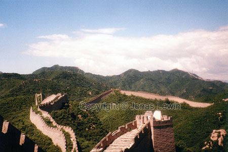

The magnificent Great Wall.
This
used to be the absolute greatest thing I've ever seen, before I went to
Antarctica. The only thing close was all the Wildebeests in Serengeti.
You see it on postcards, you read about it. Still, the sight of it is really
astounding. You can't believe that humans actually built this.
Imagine
this scenario: Mongolians wants to invade some small cities in China. So
they march towards those villages for a long time, in this terrible
landscape (terrible to march in, great to look at). Lots of Mountains that
are all covered with forest. Not the ideal place to try to rush at. It also
makes you exhausted after just a few hours. After a few weeks of marching to
the cities, you know that you must be close. Just when you watch over the
closest mountain, you see a strange sight. A wall! It doesn't look big from
where you are standing, so you think that that's a piece of cake. The closer
you get the larger the wall gets. And everywhere you look, you see the wall.
And to get to any part of the wall you have to climb up a mountainside.
Finally you reach it, and realize that there is no way around it. Looking
up, trying to figure out if you can climb over it. Only a glance is enough
to determine that you'd rather hitchhike with an alien to the moon. That's
easier. But the general has ordered you to climb over it. When you start
climbing, you see a few guards standing on the wall, just looking at you.
You know that they have an easy job getting you off the wall, if you should
succeed, by some miracle, to get half way. In this situation, there is
nothing on your mind, other than giving up. So you give up. What else is
there?

 Imagine
the strength and endurance the workers must possess to build a huge stone
wall. They build it on the highest place on a mountain side, and in the
middle of a dense forest. So to make sure that your enemies can't use trees
to climb over, you have to make the wall really tall, and also clear away
all trees that are close by. The wall is quite wide too. There is not
problem walking 5, side by side, on the wall. It's also very steep. The only
comfort is that you know that your enemies will have it a lot more difficult
than you. The only thing more difficult than building it, is to conquer it.
Imagine
the strength and endurance the workers must possess to build a huge stone
wall. They build it on the highest place on a mountain side, and in the
middle of a dense forest. So to make sure that your enemies can't use trees
to climb over, you have to make the wall really tall, and also clear away
all trees that are close by. The wall is quite wide too. There is not
problem walking 5, side by side, on the wall. It's also very steep. The only
comfort is that you know that your enemies will have it a lot more difficult
than you. The only thing more difficult than building it, is to conquer it.
One
thing I have come to reflect at is: The wall doesn't change. It looks
exactly the same on TV as the first time you saw it. For generations, the
wall has prevailed. It has remained while wars has been fought and
forgotten. It seems to be forever, but we all know that nothing is forever.
This wall is, however, as close as you get. It seems just as eternal as the
mountains.